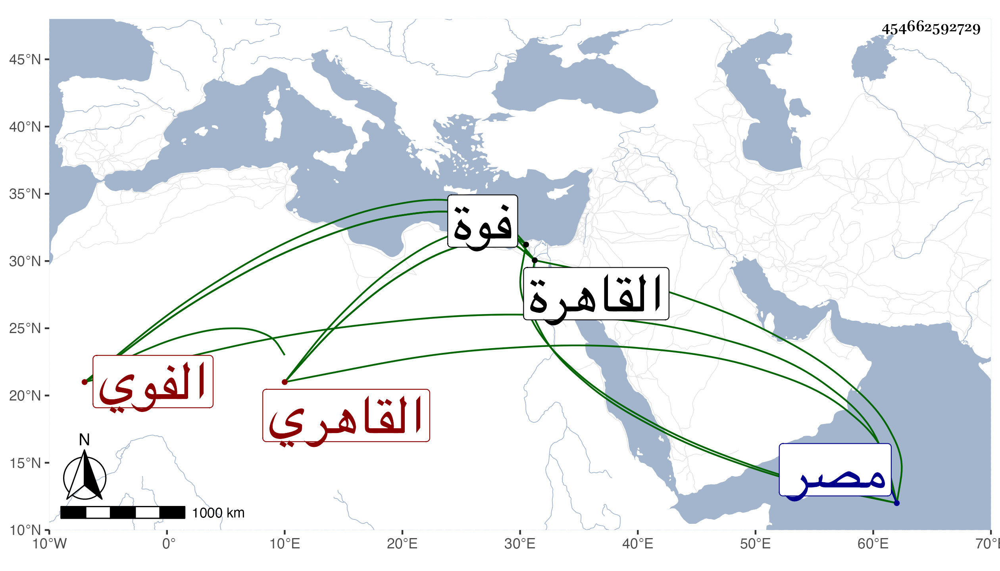

0902Sakhawi.DawLamic.ITO20230111-ara1.EIS1600.454662592729
Biography ID: 454662592729
409
عبد الوهاب بن نصر الله بن حسن ويقال له حسون بن محمد بن أحمد التاج الفوي ثم القاهري أخو البدر حسن الماضي ويعرف بابن نصر الله وذاك الأصغر . ولد سنة ستين وسبعمائة بفوة وقدم القاهرة فاشتغل بفقه الحنفية عند جماعة وكذا بغيره وباشر بجاه أخيه كثيرا من الوظائف كنظر الأوقاف والأحباس والكسوة وتوقيع الدست ووكالة بيت المال ونيابة كاتب السر في الغيبة وخليفة الحكم الحنفي ، وخدم عند عدة من أكابر أمراء الديار المصرية ، وكانت له وجاهة ووقار في الدولة ممن يحب العلم والعلماء ويجمعهم عنده ويتودد إليهم وينتمي للحنفية . مات في جمادى الآخرة سنة عشرين بالقاهرة في حياة أبيه فورثه مع بنيه عفا الله عنه .
